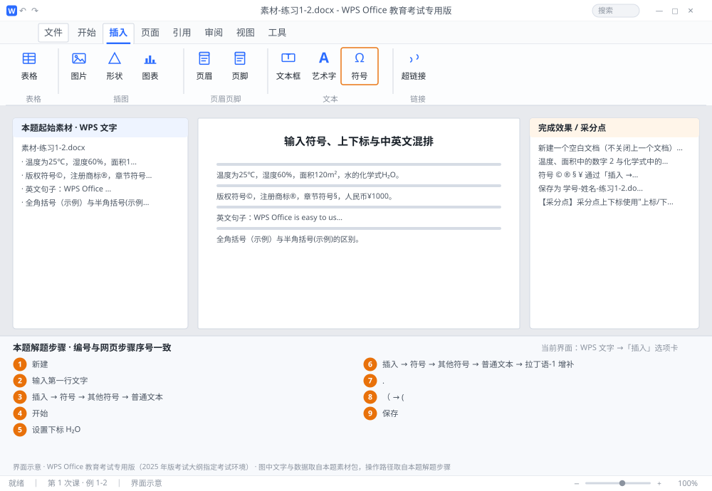

完成比对文档 · 例 1-2
输入符号、上下标与中英文混排 ｜ 第 1 次课 / WPS 文字 ｜ 网页：入门实操课.html ｜ 考试环境：WPS Office 教育考试专用版（2025 年版考试大纲指定考试环境）
用途 本页按修订后的题目要求与解题步骤生成，是交卷自查的结果基准：
逐项列出每一步应出现的可复核结果，配合模拟操作截图与解题结果文件使用。
它不是素材包的一部分，不会预置答案动作；起始素材仍从本题素材包下载。
一、本题起始素材包
目录：练习素材/练习1-2-符号与上下标/ ｜
下载包：练习素材/下载/练习1-2-符号与上下标.zip
二、题目要求
- 新建一个空白文档（不关闭上一个文档），录入素材 4 行。
- 温度、面积中的数字 2 与化学式中的 2，必须用真正的上标 / 下标格式。
- 符号 © ® § ¥ 通过「插入 → 符号」插入，不得用形状或图片代替。
- 保存为 学号-姓名-练习1-2.docx 到 课时1。
三、解题步骤（编号与下方核对表、截图编号一致）
- 新建。在当前窗口按 Ctrl+N，WPS 会新开一个文档标签，原文档不丢。（标签栏可来回切换，考试中建议每道小题一个文件，避免互相覆盖。）
- 输入第一行文字。先照常打「温度为25，湿度60，面积120m2，水的化学式H2O。」整句，上下标最后统一设置，边打边设容易乱。
- 插入 ℃。光标定位到 25 后面 →「插入」选项卡 →「符号」→「其他符号」→ 字体选「普通文本」，在字符表里找到 ℃ 双击插入（也可在"子集"里选"类似字母的符号"快速定位）。
- 设置上标 m²。选中 120m2 中的数字 2 →「开始」选项卡 → 点 X²（上标）按钮，快捷键 Ctrl+Shift+=。设置后数字会变小并上移，不是手动改字号。
- 设置下标 H₂O。选中 H2O 中的 2 → 点 X₂（下标）按钮，快捷键 Ctrl+=。
- 插入第二行符号。再点「插入 → 符号 → 其他符号」，字体「普通文本」、子集「拉丁语-1 增补」，依次找到并插入 © ® § ¥（¥ 也可在"货币符号"子集中找到）。
- 第三行英文。按 Shift 切到英文状态输入；单词之间只留一个半角空格，句末用半角句点「.」。
- 第四行对比全角/半角。中文状态下打「（」得到全角括号，英文状态下打「(」得到半角括号——肉眼能看出全角括号占一个字宽、半角更窄。
- 保存。按 F12 → 选 课时1 → 文件名 学号-姓名-练习1-2 → 类型 docx → 保存。
四、完成效果 / 采分点
采分点上下标使用"上标/下标"格式（不是缩小字号） · 符号插入正确 · 英文单词间仅一个半角空格 · 文件名与位置正确
五、逐项完成核对表
| 步骤 | 关键操作路径 | 应出现的结果（可复核） |
|---|
| 1 | 新建 | 新建 |
| 2 | 输入第一行文字 | H2 |
| 3 | 插入 ℃ | 「插入」、「符号」、「其他符号」、「普通文本」 |
| 4 | 设置上标 m² | 「开始」 |
| 5 | 设置下标 H₂O | H2 |
| 6 | 插入第二行符号 | 「插入 → 符号 → 其他符号」、「普通文本」、「拉丁语-1 增补」 |
| 7 | 第三行英文 | 「.」 |
| 8 | 第四行对比全角/半角 | 「（」、「(」 |
| 9 | 保存 | F12 |
六、模拟操作截图

界面示意 · WPS Office 教育考试专用版 · 橙色编号与本题解题步骤序号一致；
图中文字与数据取自本题素材包，功能入口取自本题解题步骤。
核对方法：按网页解题步骤完成并另存自己的成稿后，逐行比对本表第 3 列的
参数、公式、区域、文件名与对象数量；再对照网页「完成效果 / 采分点」检查版式是否一致。